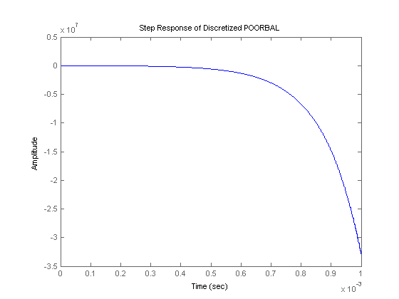
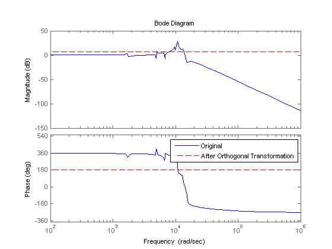
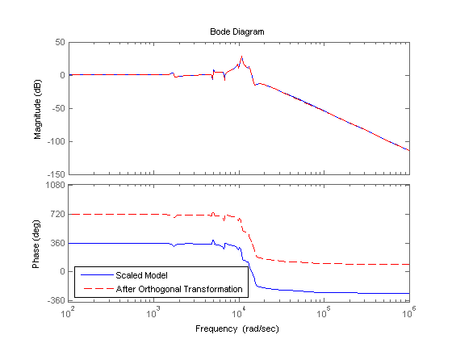
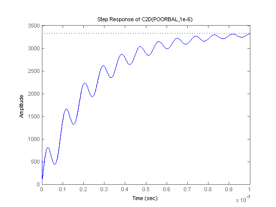
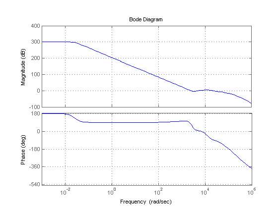
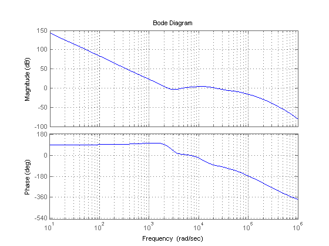
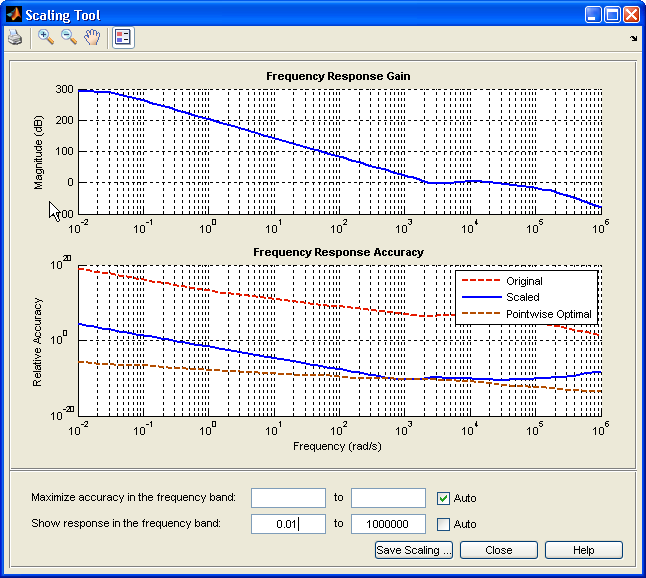
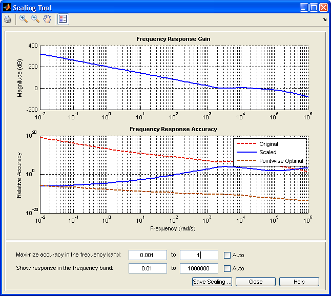
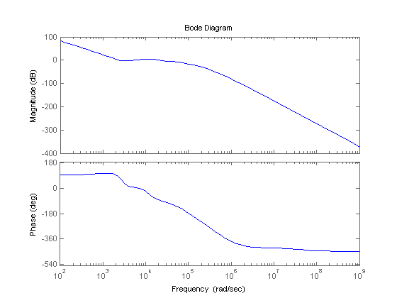

Scaling Models to Maximize Accuracy
This demo shows that proper scaling of state-space models can be critical for accuracy and provides an overview of automatic and manual rescaling tools.
Contents
Why Scaling Matters
A state-space model is well scaled when the entries of the A,B,C matrices are homogenous in magnitude and the model characteristics are insensitive to small perturbations of A,B,C (in comparison to their norms). By contrast, a model is poorly scaled when A,B,C have both small and large entries and the model characteristics are sensitive to the small entries.
Mixing disparate time scales or unit scales can give rise to badly scaled models. Working with such models can lead to severe loss of accuracy and puzzling results. To prevent these problems, it is often necessary to rescale the state vector, that is, multiply each state by some scaling factor to reduce the numerical range and sensitivity of the model.
To gain more insight into scaling issues, load the first example of poorly-scaled model:
load numdemo poorbal % load POORBAL model format short e [a,b,c,d] = ssdata(poorbal)
a = -4.2754e+003 -3.7741e-003 1.7311e-002 -6.6733e-002 -2.6809e+009 -2.9000e+003 -1.4966e+004 -1.7386e+006 -5.8087e+008 7.0698e+002 -1.0015e+006 3.8709e+006 1.4051e+008 5.1532e+003 2.4289e+005 -9.3906e+005 b = -1.0307e+015 1.7073e+021 -1.7231e+021 4.1797e+020 c = -1.3095e-008 3.0534e-014 6.5238e-013 -2.5219e-012 d = 1.1229e+003
In this model, the entries of A range from 1e-3 to 1e9 in magnitude. This model is stable with poles at: -1.9e6, -2.6e3+7.0e4i, -2.6e3-7.0e4i, -4.3e3.
Next, discretize this model at 1 MHz (Ts = 1e-6) using the matrix-based version of c2d (this version does not perform any scaling) and plot the step response of the discretized model:
[ad,bd] = c2d(a,b,1e-6);
step(ss(ad,bd,c,d,1e-6),1e-3);
title('Step Response of Discretized POORBAL')
 The response diverges even though the continuous-time model is stable, a consequence of the poor scaling of the A matrix.
Poor scaling also impacts the accuracy of frequency-domain computations. State-of-the-art algorithms heavily rely on orthogonal state coordinate transformations, and such transformations introduce errors of order eps (the machine precision) times the norms of A,B,C. While such errors are usually negligible, they can become dominant when A,B,C are poorly scaled. To see this phenomenon, load the next example:
load numdemo anil
The anil model is a state-space realization of a 20-th order transfer function with most of its dynamics between 1e3 and 1e5 rad/s. The coefficients of the A matrix range between 1 and 1e80 in magnitude. To simulate the effect of orthogonal transformations applied to this model, generate a random orthogonal matrix U and use ss2ss to perform the corresponding change of state coordinates:
[U,junk] = qr(randn(20));
anil2 = ss2ss(anil,U); % perform state coordinate transformation U
Mathematically, anil and anil2 have the same frequency response. Numerically, however, the Bode responses of anil and anil2 are very different:
bode(anil,'b',anil2,'r--') legend('Original','After Orthogonal Transformation','Location','northeast')
Warning: The frequency response has poor relative accuracy. This may be because the response is nearly zero or infinite at all frequencies, or because the state-space realization is ill conditioned. Use the "prescale" command to investigate further.
This example shows that for poorly scaled models, even orthogonal transformations can be unsafe and destroy accuracy.
Sensitivity-Minimizing Scaling
For simple models derived from physics, you can avoid scaling issues by carefully selecting units to reduce the spread between small and large coefficients. For more complex models, however, finding a proper scaling is a challenge. Ad hoc schemes such as balancing of the A matrix (see balance) are often useful but sometimes harmful.
The Control System Toolbox™ software provides advanced scaling algorithms that minimize the model sensitivity to small perturbations of A,B,C proportional to their norms. This helps maximize accuracy of the computed frequency response, ZPK representation, etc. The prescale command is the gateway to these scaling algorithms. For example, you can use prescale to scale the anil model used above:
Scaled_anil = prescale(anil);
The coefficients of the A matrix now range from 1e3 to 3e7 instead of 1 to 1e80. Apply the orthogonal transformation U to the scaled model and compare the Bode responses:
Scaled_anil2 = ss2ss(Scaled_anil,U); bode(Scaled_anil,'b',Scaled_anil2,'r--') legend('Scaled Model','After Orthogonal Transformation','Location','southwest')
The Bode responses match closely now. Scaling has made orthogonal transformations safe again and you can expect good accuracy from computations involving this scaled model.
Automatic Scaling
Most algorithms in the Control System Toolbox software automatically rescale state-space models to prevent catastrophic loss of accuracy. As a result, you are mostly insulated from scaling issues. For example, the bode command automatically scales incoming models so that it can safely perform orthogonal transformations to speed up the frequency response computation. Therefore, there is no need to use prescale before bode unless you want detailed information about the relative accuracy of the computed Bode response.
Similarly, you need not scale your model prior to using the c2d command. If you discretize the poorbal model directly with c2d, scaling issues are taken care of automatically and the step response of the discretized model converges as expected:
poorbal_d = c2d(poorbal,1e-6);
step(poorbal_d,1e-3)
title('Step Response of C2D(POORBAL,1e-6)');
 Manual Scaling
While the Control System Toolbox scaling algorithm handles most models without user intervention, there are rare cases where good accuracy can't be achieved over the entire frequency range and the algorithm must trade accuracy in one band for accuracy in another. In such case, a warning is issued to alert you of potential inaccuracies. To illustrate this behavior, load the next example and plot its Bode response:
load numdemo warnsys bode(warnsys,{1e-3,1e6}), grid on
Warning: The frequency response may be inaccurate in parts of the frequency
range.
Specify a frequency interval {FMIN,FMAX} or use the "prescale" command to
improve accuracy.
 Note the warning issued by the bode command. This 17-th order model has dynamics near 0.01 rad/s and between 1e3 and 1e6 rad/s, separated by a 300dB gain drop. You can eliminate the warning by narrowing down the frequency range of interest, for example, to [10,1e6] rad/s:
bode(warnsys,{10,1e6}), grid on
 This instructs the algorithm to maximizes accuracy in the interval [10,1e6]. You can also investigate the underlying accuracy tradeoff by typing:
>> prescale(warnsys)
This command opens the interactive Scaling Tool shown below. Set the frequency axis limits to 1e-2 to 1e6. The top plot shows the frequency response magnitude, and the bottom plot shows:
- The relative accuracy of the computed response without scaling (red)
- The relative accuracy of the computed response with scaling (blue)
- The best achievable accuracy when using independent scaling at each frequency (brown)
Any relative accuracy value greater than one signals poor accuracy.

In this example, the Relative Accuracy plot shows that the scaling algorithm achieved good accuracy in the [1e3,1e6] frequency band at the expense of accuracy at low frequencies. If you only care about the frequency band [1e-3,1], you can override this default range selection and manually specify the frequency band where you want maximum accuracy. For example, enter [1e-3,1] in the edit boxes next to Maximize accuracy in the frequency band:

This action updates the bottom plot and the relative accuracy of the scaled model (blue curve) is now best near 1e-2 rad/s, but is significantly worse in the [1e3,1e6] band.
The Scaled Property of State-Space Models
The State-Space (@ss) object has a Scaled property to indicate when a model is already scaled. Its default value is false. The prescale command sets this property to true:
sys = prescale(anil); sys.Scaled
ans =
1
Because the scaling algorithm skips models with Scaled=true, you can manually set the Scaled property to true when your model is well scaled and you want to eliminate the small overhead associated with scaling. If you want more control over where accuracy is maximized, you can also explicitly scale your model before using it:
sys = prescale(warnsys,{10,1e6});
bode(sys)
 Here warnsys is scaled with emphasis on the frequency range [10,1e6] and bode does not attempt to rescale the resulting model sys (no more warning).
Conclusion
Proper scaling of state-space models is important to achieve accurate results. Most Control System Toolbox commands take care of scaling automatically. You are alerted when accuracy may be compromised and you can easily correct the problem by specifying the frequency band of interest.